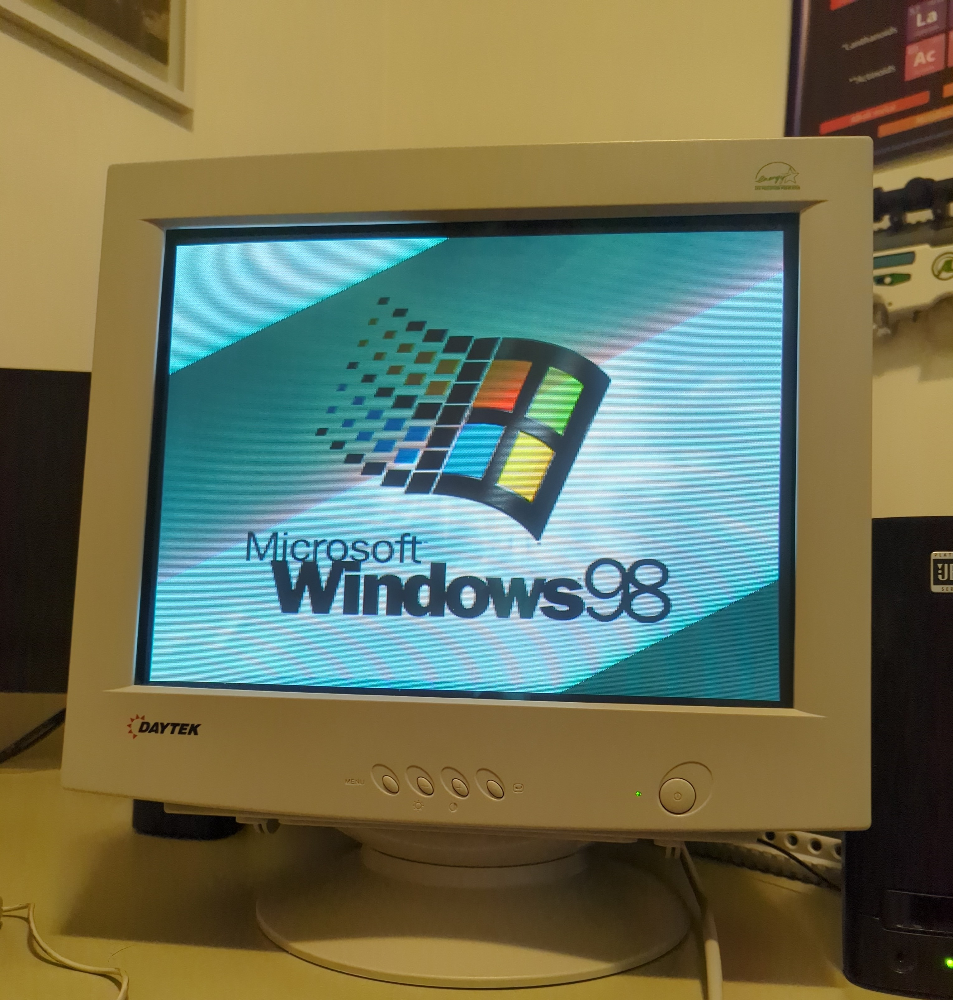

Fig. 4-1: An old computer setup I finally got to work.Fig. 4-2: Here is where the computer is now.Fig. 4-3: This is what the computer looks like booting up (ignore my reflection and the weird face I have going on there).Fig. 4-4: The screen the briefly displays after the Windows 98 banner.Fig. 4-5: Yes, it can run Doom.Fig. 4-6: It can also run Duke Nukem 3D. Groovy.Fig. 4-7: It runs CD media pretty well. The audio isn't the best (SoundBlaster-16, Platinum UBL Series Speakers), but that just adds to the authenticity of the build.Fig. 4-8: Here is another example of this. This CD is much older than the Seinfeld CDs, and it still runs great.Fig. 4-9: WEP (Windows Entertainment Pack) is also on here from archive.org via a CD-ROM. WEP is a collection of Win9x games, so this runs flawlessly. These games include but are not limited to: FreeCell, Pyramid, TriPeaks, Minesweeper, SkiFree, PipeDreams, and more.Fig 4-10: Don't gamble.Fig. 4-11: A legendary message from Mr. PQ.Fig. 4-12: No computer today.